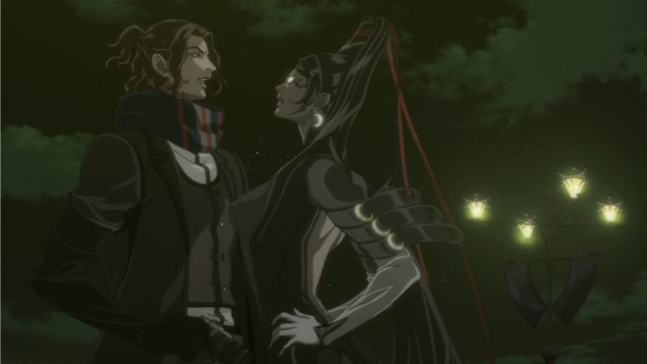

Anime studio Gonzo was at it's peak in 2007, around the time the OVA series "Afro Samurai" was released. To date, Gonzo and Studio Ghibli remain the only anime companies to receive a major American award (Emmy and Oscar, respectively). But Gonzo ran into tough times, filing for bankruptcy around 2009, and never fully recovering from their heyday of stylish and ambitious productions. The reason I mention "Afro" is because, to date, the studio did release one more production that might interest fans that remember that period. "Bayonetta - Bloody Fate" is a 2013 feature-film adaptation of the cult-hit action game "Bayonetta." While the original game released in 2009, the studio was preparing for a sequel for the Wii U, setting up the character to be a cornerstone for Nintendo's console for mature gamers. Thus, the film's timing seemed like a good marketing strategy. In the movie, the stylish character designs, violent action and sexy overtones make the movie feel like it could have been set in the same universe of "Afro Samurai." And for most people, that's enough of a selling point: if you liked "Afro Samurai," or if you liked the "Bayonetta" game series, you'll want to watch "Bloody Fate." Beyond that, the movie isn't quite the standalone action extravaganza success that one would hope for. But it's not too far off.One of the hardest parts involved with adapting "Bayonetta" is the story; there IS one, but it's dense and complex, and ultimately, wasn't too important in the enjoyment of the game. A story is a little more important in a film. For the most part, "Bloody Fate" follows the plot of the first "Bayonetta" game fairly closely: the titular action heroine is an Umbra witch with no memory of her past, but her skills make her well-suited for fighting the hoards of invisible 'angels' (demonic monsters) that roam the Earth, especially when supplied with weapons by demonic storekeeper Rodin. Her adventure brings her to the architect behind her past and her memory loss, as well as a climax that requires her to save the world. Early on, a human reporter named Luka, able to see her and fully aware of her powers, insists that he saw her kill his father, and he's determined to reveal the truth the world (his presence is mostly just comic relief and a channel to guide the human viewer). Generally, you just need to know that Bayonetta goes from one fight to the next.Right away, I caught on that 'sex appeal' is portrayed differently in the game and the film. From the creator of the "Devil May Cry" series, Bayonetta's character was designed to be the definition of sexy: her unrealistic body has very long legs, propped on high heels, a slender figure and a face that looks like a naughty librarian. Her skin-tight black suit is actually her infinitely-long hair. During major attacks, she can transform it into weapons, and even into massive demonic beasts, but doing so requires the hair to come off her body, leaving her partially nude in the moment. In gameplay, she effortlessly dodges attacks, using guns attached to her heels, and sometimes summoning suggestive "tools" to destroy smaller enemies. Despite all that context, having played the game, I never felt like Bayonetta was ever sexualized in a gross way. It was her confidence that made her beautiful, but not in a way that would excite 14-year-old boys in a unhealthy manner. It was subtle. Gonzo doesn't seem to know the meaning of "subtle," for better or for worse. In "Bloody Fate," the camera pans and pauses on Bayonetta's naked torso and licking lips. Camera angles seem positioned to get the best effect of an attack. Additional lines of dialogue include sexual innuendos never present in the game. New scenes, like Bayonetta stepping out of a shower, provide extra fanservice. It's not as bad as it could have been compared to other anime, but fans of the game will be certain to notice. Personally, I was disappointed that the studio seemed to misunderstand the game's tone. Alternatively, some teenagers might like "Bloody Fate"'s interpretation more.If the story or the sexy don't meet your expectations, surely the action, the biggest selling point, will? Almost, but again, the game spoiled me from enjoying the movie. In the game, 3D movement is carefully timed to your button presses, with a cathartic feeling with every kick, punch and shot. Not unexpectedly, "Bloody Fate"'s fight scenes are floaty and with liberal use of shortcuts, a rare case where I actually preferred 3D animation over this film's 2D. If you haven't experienced the game yourself, the movie's action isn't too bad, and the variety in monsters (and ways they are beaten) should keep you engaged.The visual production reminds me of "Vampire Hunter D - Bloodlust" and "Hellsing Ultimate," with shadow-highlighted, elongated, chisel-chinned character designs. Gothic backgrounds are juxtaposed with colorful glass-inspired foreground effects. In 2013, it's a little dated (and not quite as good-looking as the anime it inspires from), but overall it's a stylish production that feels unique today. Is it a good adaptation of the game's original art? I'd say yes, but it's obvious that they were restricted to match the game in ways that almost make me prefer the game. Animation is generally best during action scenes, but I'm being a little generous with the score I gave it in that department. To help fans feel at home, Funimation went out of their way to get most of the original English actors from the game, and it goes a long way (despite needing to stay on script to match lip-sync, and therefore feeling a bit out of place at times to the original game). The music is the same smooth-jazz inspired soundtrack from the game, but while I always thought it was cool, I never thought it matched the content, neither in gameplay or in the movie. Gonzo really is a shadow of their formal self. If there was something that could have brought them back to their glory, adapting the popular action game "Bayonetta" should have been it. But throughout "Bayonetta - Bloody Fate," I just kept missing the game, one of the worst things one can say about a video game adaptation. Strong production values and the original game's sense of style help give the movie a place. Fans of gothic fantasy action anime might enjoy it. But compared to the best of Gonzo, this doesn't come close... at least it also isn't the worst thing they've made, either.
- "Ani" More reviews can be found at : https://2danicritic.github.io/ Previous review: review_Batman_Ninja Next review: review_Beautiful_Bones_-_Sakurako's_Investigation